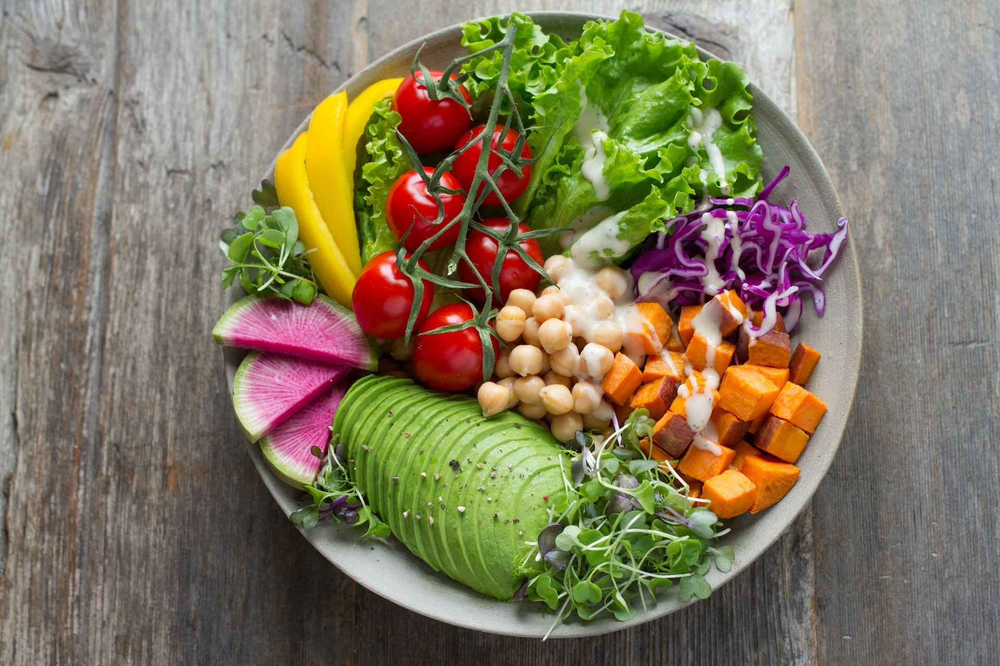

Sejak tahun 2019, Kementerian PPN/Bappenas dan Kementerian Keuangan menyusun Dokumen Ringkasan Rincian Output Kementerian/Lembaga yang...
Sesuai Peraturan Presiden Nomor 72 Tahun 2021 tentang Percepatan Penurunan Stunting, Badan Kependudukan dan Keluarga Berencana Nasional (BKKBN) ditugaskan...
Workforce Nutrition atau Gizi Karyawan merupakan terminologi yang mulai sering didengar oleh karyawan di berbagai industri. Pemenuhan gizi karyawan...
Februari dan Agustus merupakan Bulan Penimbangan Balita sekaligus pemberian vitamin A di posyandu se-Indonesia. Berbeda dari bulan lainnya...
Studi Status Gizi Indonesia (SSGI) merupakan survei berskala nasional yang dilakukan untuk mengetahui perkembangan status gizi balita...
Nutrition International, lead of SUN CSO (Civil Society Organization) Indonesia, Selasa lalu (25/1) meluncurkan Kursus Daring Gizi Remaja dan Anemia...